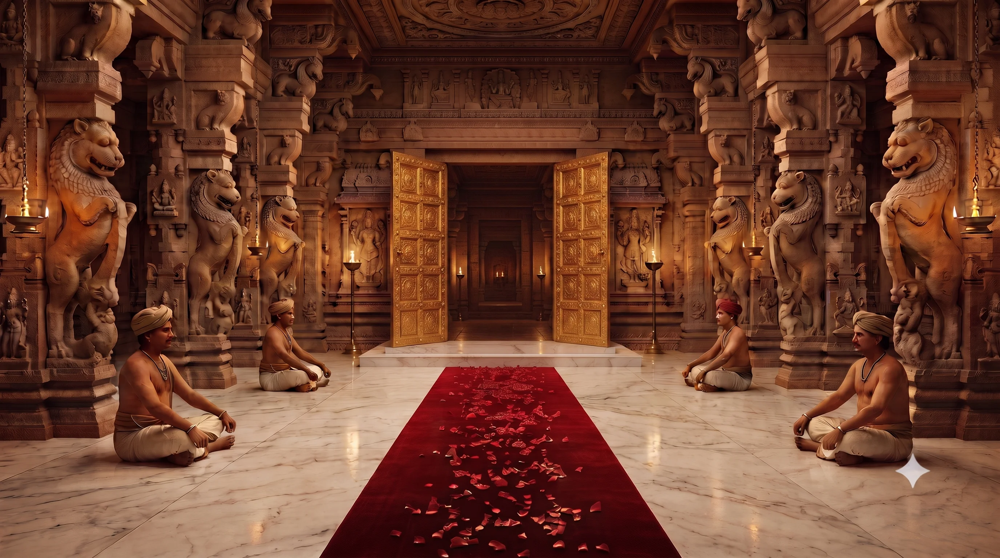
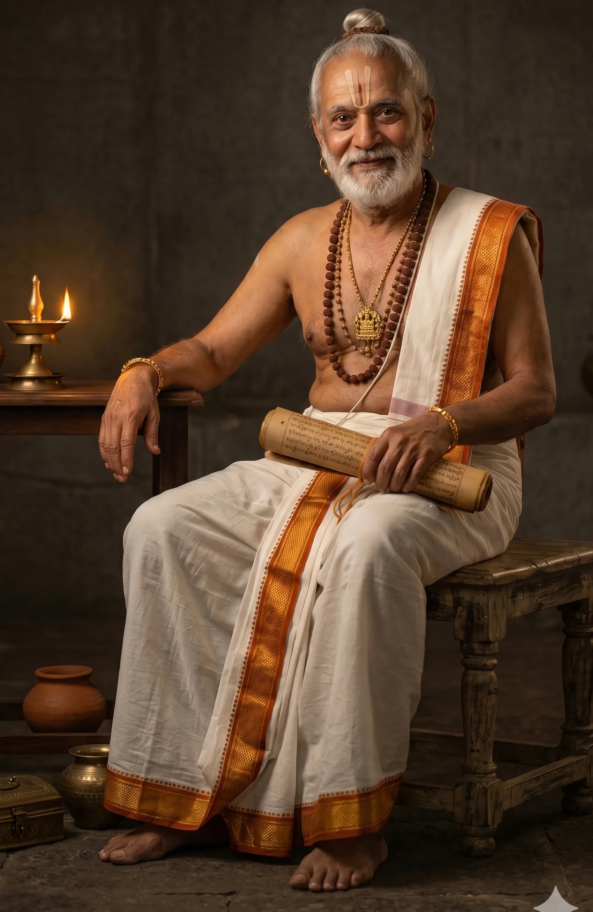
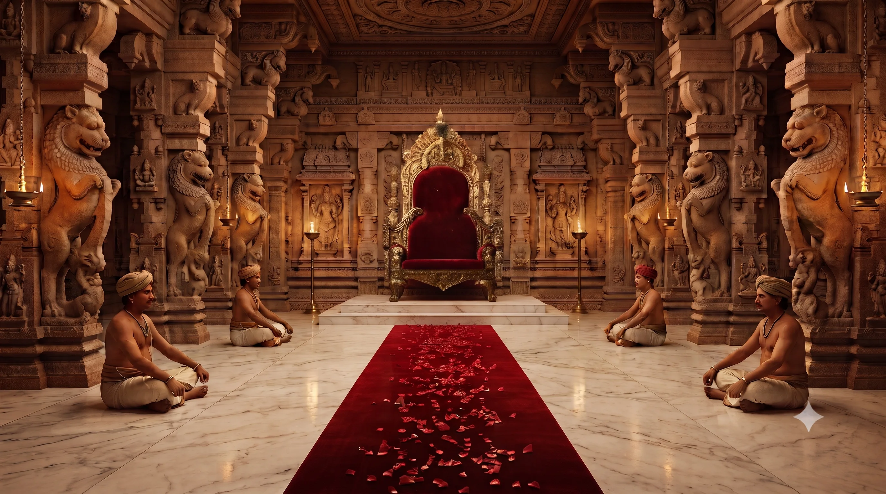
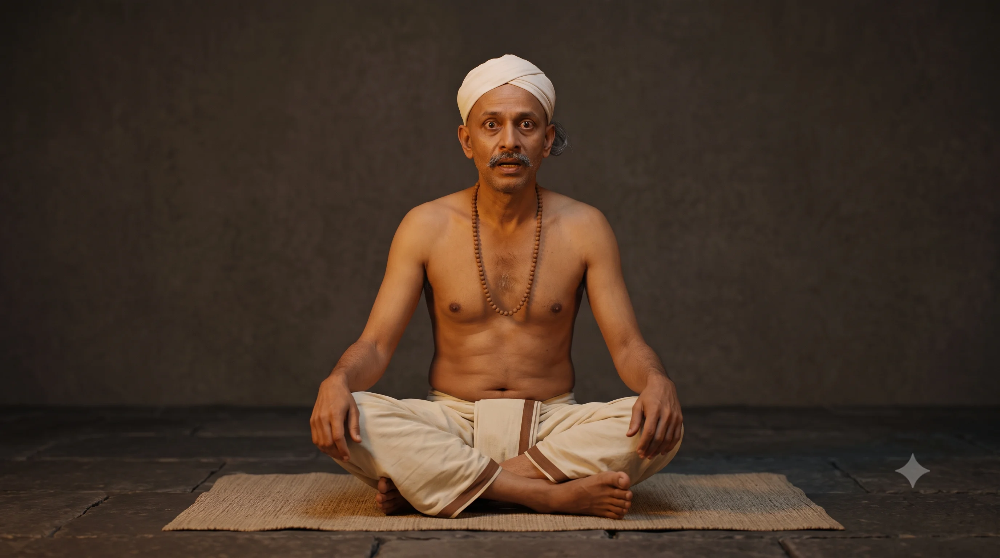
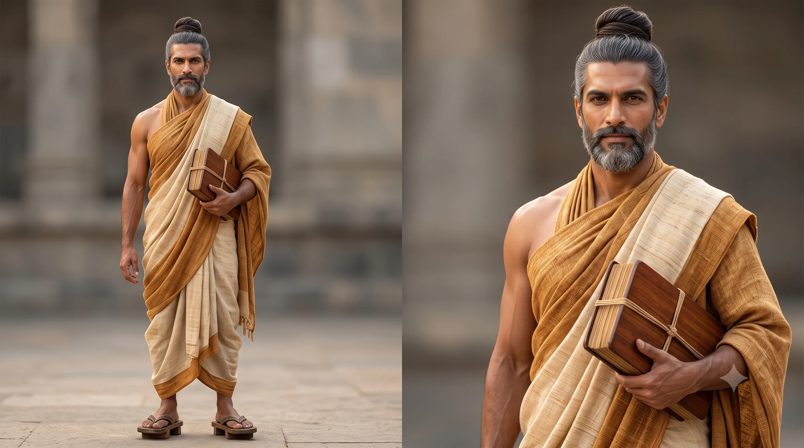

తెనాలి రామకృష్ణను అందరూ "వికటకవి" అని పిలుస్తారు — కానీ ఆ బిరుదు ఎలా వచ్చిందో చాలామందికి తెలియదు. ఒకరోజు కాశీ నుంచి భైరవ శర్మ అనే అహంకారి మహాపండితుడు విజయనగర రాజసభనే సవాల్ చేస్తాడు, తనను ఓడించగలిగేవారు ఎవరూ లేరని గర్వంగా ప్రకటిస్తాడు. సభలో అందరూ మౌనంగా ఉండిపోతే, మూలలో అరటిపండు తింటూ కూర్చున్న తెనాలి రామకృష్ణ మాత్రం నెమ్మదిగా లేచి నిలబడతాడు. హాస్యం, తర్కం కలగలిపిన అతని సమాధానాలు సభను నవ్వుల్లో ముంచెత్తుతాయి — పండితుడి గర్వాన్ని పటాపంచలు చేస్తాయి. తెనాలి రామకృష్ణ, విజయనగర సామ్రాజ్యపు ప్రసిద్ధ ఆస్థాన కవి, ఈ పోటీలో ఎలా తన అత్యంత ప్రసిద్ధ బిరుదును గెలుచుకున్నాడో ఈ కథలో చూద్దాం.
This is the origin story of Tenali Rama's most famous title — "Vikatakavi," the jester-poet. When an arrogant scholar from Kashi challenges the entire Vijayanagara court, only Tenali — eating a banana in the corner — dares to answer, turning every riddle into a joke laced with truth.
కాశీ పండితుడి గర్వపు ప్రవేశం
The Grand Entrance of the Arrogant Scholar from Kashi
రాజసభ అంతా నిశ్శబ్దంగా ఉంది. దేశం నలుమూలల నుంచి వచ్చిన కవులు, పండితులు గర్వంగా కూర్చున్నారు. అప్పుడే ద్వారం దగ్గర నుంచి ఒక గంభీరమైన స్వరం వినిపించింది.
The court sat in silence — poets and scholars from every corner of the kingdom, seated with pride. Then a booming voice echoed from the entrance.
పెద్ద జటాలు, మెరిసే వస్త్రాలు, ముఖంలో అహంకారం, భుజంపై ఒక మందపాటి గ్రంథం — భైరవ శర్మ నెమ్మదిగా సభ మధ్యకు వచ్చాడు. అడుగు వేసే తీరు చూస్తే తనే రాజు అనుకుంటున్నట్టుంది.
Long matted hair, glittering robes, arrogance written across his face, and a thick book on his shoulder — Bhairava Sharma walked to the center of the court as if he owned it.
అరటిపండు తింటూ తెనాలి ప్రవేశం
Tenali's Entrance — Eating a Banana While the Court Trembles
సభ చివర్లో ఒకడు ప్రశాంతంగా అరటిపండు తింటూ కూర్చున్నాడు — పక్కనే మరో పండు రెడీగా పెట్టుకుని. అతడే తెనాలి రామకృష్ణుడు.
At the far end of the court sat a man calmly eating a banana, with another already set aside — Tenali Ramakrishna.
భైరవ శర్మ అసహ్యంగా చూసి "ఇతడు ఎవరు? సభకు వచ్చాడా లేదా విందుకు వచ్చాడా?" అన్నాడు. తెనాలి చిరునవ్వుతో బదులిచ్చాడు.
Bhairava Sharma looked at him with disgust — "Who is this? Did he come for the court, or for a feast?" Tenali replied with a smile.
చంద్రుడి చతురోక్తి — సభ నవ్వుల్లో మునిగింది
The Moon Riddle — The Court Erupts in Laughter
భైరవ శర్మ గొంతు సరిచేసుకుని అడిగాడు — "చంద్రుడు ఎందుకు రాత్రివేళ మాత్రమే వస్తాడు? హాస్యంగా, తర్కంగా, కవిత్వంగా చెప్పండి!" కవులు తలలు పట్టుకున్నారు — ఎవరూ మాట్లాడలేదు.
Clearing his throat, Bhairava Sharma asked — "Why does the moon appear only at night? Answer with wit, logic, and poetry!" The poets held their heads — no one spoke.
సభలో పెద్ద నవ్వులు. భైరవ శర్మ ముఖం ఎర్రబడింది. రాజు నవ్వు ఆపుకోలేకపోయాడు.
The court roared with laughter. Bhairava Sharma's face turned red. Even the King could not hold back his laughter.
అప్పు చతురోక్తి — తోటి కవుల విస్మయం
The Debt Riddle — Fellow Poets Watch in Astonishment
కోపంతో చెవులు ఎర్రబడ్డాయి భైరవ శర్మకు. "అయితే చెప్పు — లోకంలో అన్నిటికంటే వేగంగా పరిగెత్తేది ఏది?" కవులు మళ్లీ మౌనం. తెనాలి వెంటనే, ఆలోచించకుండా బదులిచ్చాడు.
Bhairava Sharma's ears burned red with anger. "Then tell me — what runs faster than anything in the world?" The poets fell silent again. Tenali answered instantly, without a thought.
సభ అంతా నవ్వులతో మార్మోగిపోయింది. భైరవ శర్మ నోరు తెరిచాడు — మళ్లీ మూశాడు.
The entire court thundered with laughter. Bhairava Sharma opened his mouth — and shut it again, speechless.
జ్ఞానం vs ధనం — చివరి ఉచ్చు
Knowledge vs. Wealth — The Final Trapభైరవ శర్మ పూర్తిగా కోపంలో ఉన్నాడు. "చివరి ప్రశ్న! జ్ఞానం గొప్పదా? ధనం గొప్పదా? ఇది తెలివైన ప్రశ్న — వికటంగా సమాధానం చెప్పలేవు!" తెనాలి తల పైకెత్తి రాజును చూశాడు.
Bhairava Sharma was now fully consumed with anger. "One final question! Which is greater — knowledge, or wealth? This one is clever — you cannot mock your way out of it!" Tenali raised his head and glanced at the King.
సభ మొత్తం చప్పట్లతో మార్మోగిపోయింది. భైరవ శర్మ మాట్లాడలేకపోయాడు. అతని గ్రంథం కింద పడింది.
The entire court broke into applause. Bhairava Sharma was left speechless. His thick book slipped from his hand and fell to the floor.
వికటకవి జననం — రాజు బిరుదు ప్రదానం
The Birth of "Vikatakavi" — The King Bestows the Title
భైరవ శర్మ చివరి ప్రయత్నంగా అన్నాడు — "రామకృష్ణా! ఇది కవిత్వం కాదు! పరిహాసం!" సభ మొత్తం నిశ్శబ్దమైంది. ఇది ఒక అవమానం. తెనాలి చిరునవ్వుతో బదులిచ్చాడు.
In a final attempt, Bhairava Sharma declared — "Ramakrishna! This is not poetry! It is mockery!" The whole court fell silent — this was an insult. Tenali replied with a smile.
భైరవ శర్మ మాటలేకుండా నిలబడ్డాడు. కృష్ణదేవరాయలు లేచి నిలబడి ప్రకటించాడు.
Bhairava Sharma stood speechless. Krishnadevaraya rose to his feet and made his declaration.
సభ అంతా ఒక్కసారిగా లేచి చప్పట్లు కొట్టింది. భైరవ శర్మ నెమ్మదిగా తల వంచాడు. తర్వాత మెల్లగా తెనాలి దగ్గరకు వచ్చి అడిగాడు.
The entire court rose in applause. Bhairava Sharma slowly bowed his head, then walked up to Tenali and asked one last question.
సభ మళ్ళీ నవ్వింది. "సూటిగా చెప్పిన నిజాన్ని చాలామంది మర్చిపోతారు — కానీ నవ్విస్తూ చెప్పిన నిజం మాత్రం జీవితాంతం గుర్తుంటుంది" అంటూ తెనాలి రాజువైపు తిరిగి చిరునవ్వు చిందించాడు.
The court laughed once more. "Truth spoken plainly is often forgotten — but truth spoken with laughter is remembered for a lifetime," Tenali said, turning to the King with a smile.
నవ్వు నా ఆయుధం, నిజం నా బాణం — హాస్యంతో చెప్పిన సత్యమే అసలైన తెలివి.
"Laughter is my weapon, truth is my arrow" — wit that carries truth is the sharpest kind of intelligence.
అహంకారం ఎప్పుడూ తెలివైన వినయం ముందు ఓడిపోతుంది. మనం సీరియస్గా చెప్పలేని నిజాలను కూడా హాస్యంతో సునాయాసంగా చెప్పవచ్చు — అదే నిజమైన వికటకవితనం.
Arrogance always loses to clever humility. Truths too hard to say seriously can be delivered gently through humor — that is the true art of the "Vikatakavi."
హాస్యంతో నిజాన్ని చెప్పగలగడం అసలైన తెలివి. నవ్విస్తూనే లోతైన సత్యాన్ని బోధించగలవాడే నిజమైన వికటకవి.
Speaking truth through humor is true intelligence. One who can teach deep truth while making people laugh is the real Vikatakavi.
కాశీ నుంచి వచ్చిన అహంకారి పండితుడు భైరవ శర్మ రాజసభను సవాల్ చేసినప్పుడు, తెనాలి రామకృష్ణ అరటిపండు తింటూనే అతని ప్రతి ప్రశ్నకూ హాస్యంతో, తర్కంతో సమాధానం చెప్పాడు.
When an arrogant scholar named Bhairava Sharma from Kashi challenged the court, Tenali answered every riddle with wit and logic — while calmly eating a banana.
భైరవ శర్మ కాశీ నుంచి వచ్చిన ఒక గర్విష్టి మహాపండితుడు — పదిహేను రాజ్యాల సభల్లో ఎవరూ తనను ఓడించలేదని గర్వించేవాడు. తెనాలి రామకృష్ణతో పోటీలో ఓడిపోయాడు.
Bhairava Sharma was a proud scholar from Kashi who boasted that no one in fifteen kingdoms had ever defeated him — until he lost to Tenali.
అవును, ఈ కథ 8+ వయసు పిల్లలకు చాలా అర్థమవుతుంది మరియు చతురమైన ఆలోచనను, తెలివైన హాస్యాన్ని ప్రోత్సహిస్తుంది.
Yes, this story is well suited for children aged 8 and above and encourages quick thinking and clever humor.
గర్వం, అహంకారం ఎప్పటికైనా తెలివైన వినయం ముందు ఓడిపోతాయి. హాస్యం అనేది కేవలం నవ్వించడానికే కాదు — లోతైన సత్యాన్ని సున్నితంగా చెప్పే గొప్ప ఆయుధం.
Pride and arrogance always lose to clever humility. Humor is not just for laughter — it is a powerful way to deliver deep truth gently.
తెనాలి రామకృష్ణ కథలు — RayalSabha · @Rayalsabha చానెల్ Subscribe చేయండి
ఇంకా 31 తెనాలి కథలు వస్తున్నాయి!
Subscribe చేయండి — ఒక్క కథ కూడా miss అవ్వకండి.